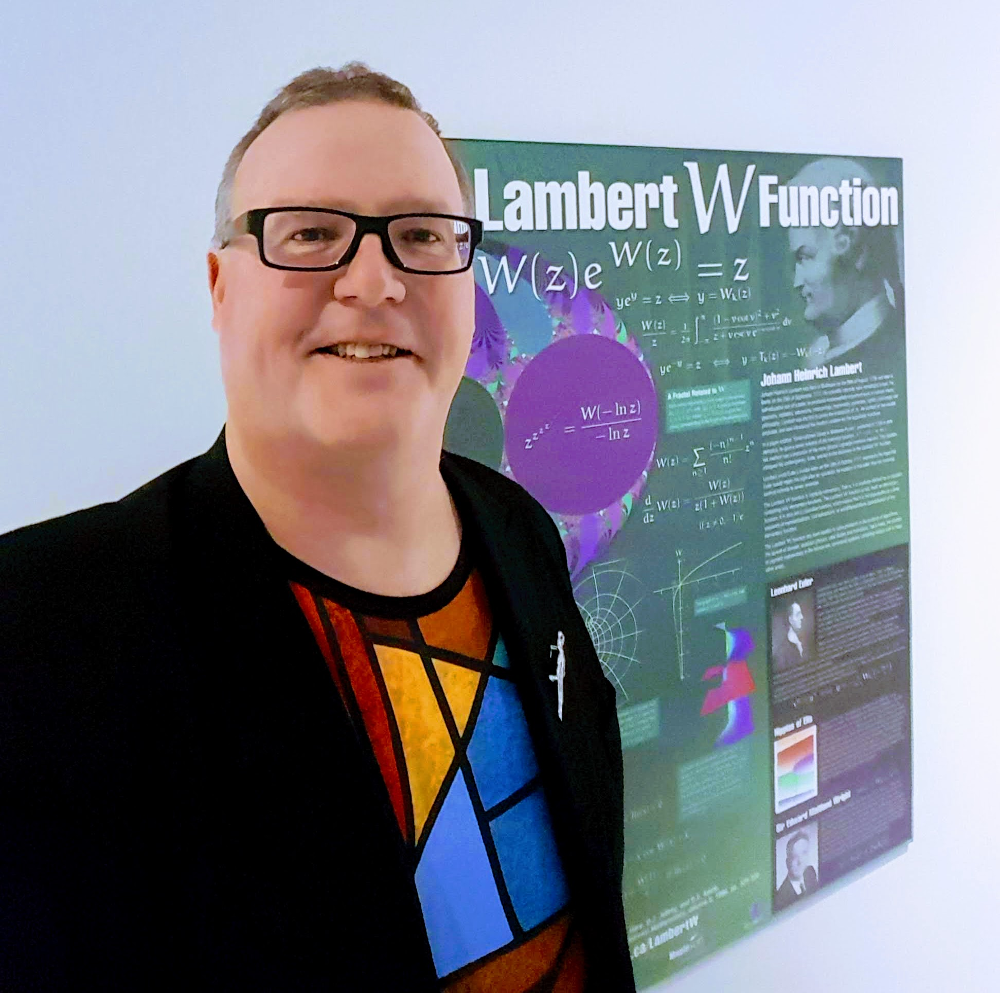

About the authors
Contents
About the authors¶
Neil J. Calkin¶
Neil J. Calkin studied mathematics as an undergraduate at Trinity College, Cambridge, and received his Ph.D. in Combinatorics and Optimization from the University of Waterloo. In 1994, he co-founded the Electronic Journal of Combinatorics with Herbert S. Wilf. He is currently a Professor at Clemson University in the School of Mathematical and Statistical Sciences. |
Eunice Y.S. Chan¶
Eunice Y. S. Chan did her B.Sc., M.Sc., and Ph.D. in Applied Mathematics at Western University. She was a postdoctoral fellow at the Centre for Medical Evidence, Decision Integrity and Clinical Impact (MEDICI Centre), Department of Anesthesia and Perioperative Medicine, Schulich School of Medicine and Dentistry at Western University in London, Ontario. She is now Assistant Professor in the School of Medicine, The Chinese University of Hong Kong, Shenzhen, China. |
Robert M. Corless¶
Robert M. Corless did his B.Sc. in Mathematics and Computer Science at the University of British Columbia, his M.Math at Waterloo, and his PhD at UBC. He is Emeritus Distinguished University Professor at Western University, a member of the Rotman Institute of Philosophy, the Scientific Director of The Ontario Research Center for Computer Algebra and an Adjunct Professor at the Cheriton School of Computer Science, the University of Waterloo. He is the Editor-in-Chief of Maple Transactions. |

Fig. 15 Rob and the poster for the Lambert W function at www.orcca.on.ca/LambertW¶ |